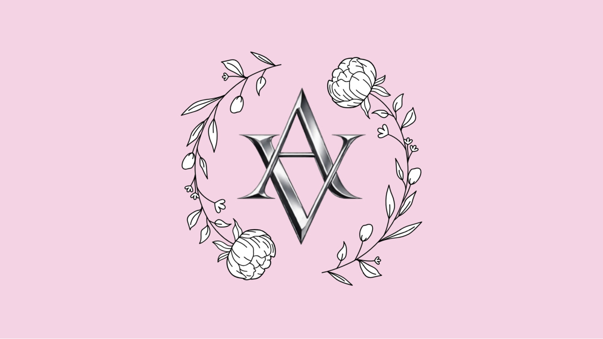

Wrong answer 😭 try again
💕 This website was meant to be special. A surprise I have been working on since January for our anniversary in June, because I can't be by your side for a few years. But with the current situation between us, it might be meaningless now. I would still appreciate it a lot if you take your time to relive each memory one last time. This website won't stay active for very long, so enjoy while you can. 💕
🔒 Memory Locked